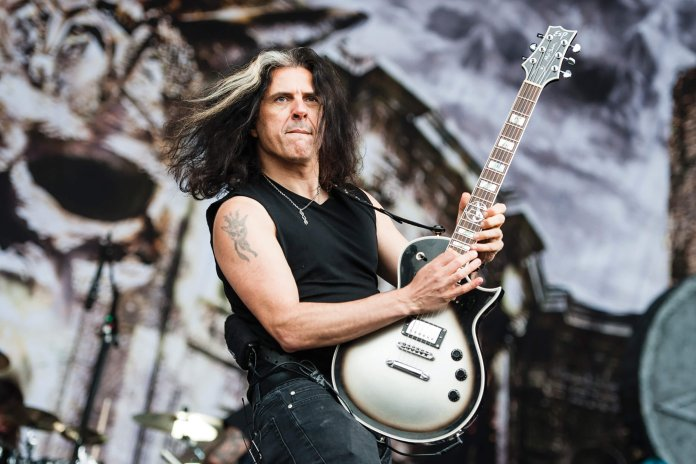

Artistas Destacados
Kiko Loureiro
Guitarrista de Megadeth, reconocido por su técnica limpia, versatilidad y experiencia en el metal progresivo.

Alex Skolnick
Conocido por su trabajo con Testament y proyectos de fusión jazz, es uno de los guitarristas más innovadores del metal.